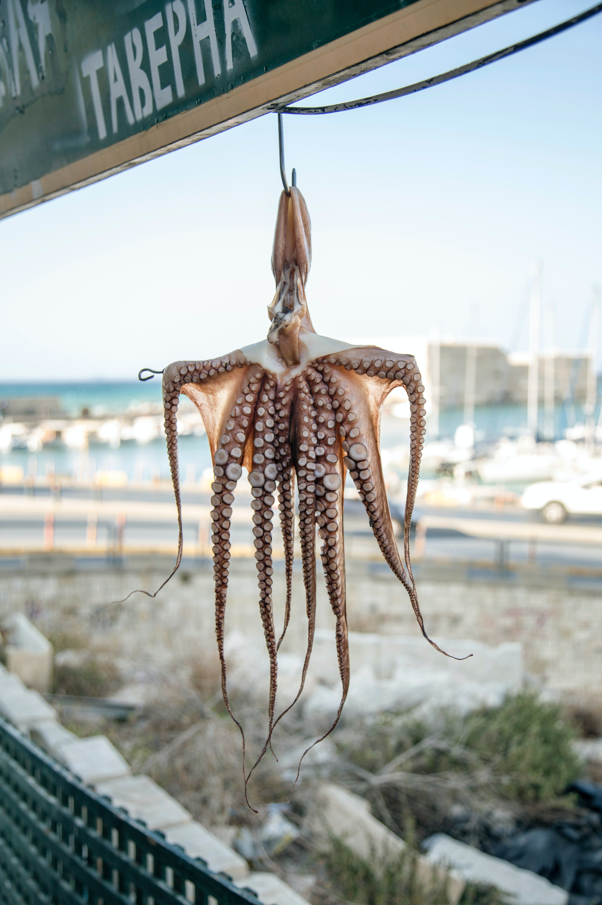
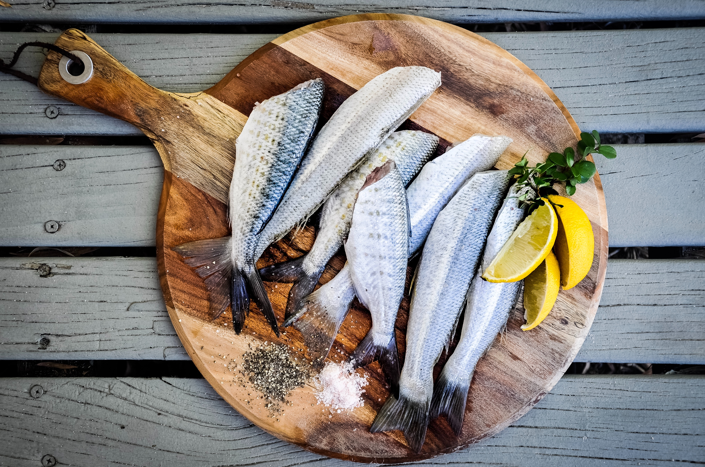
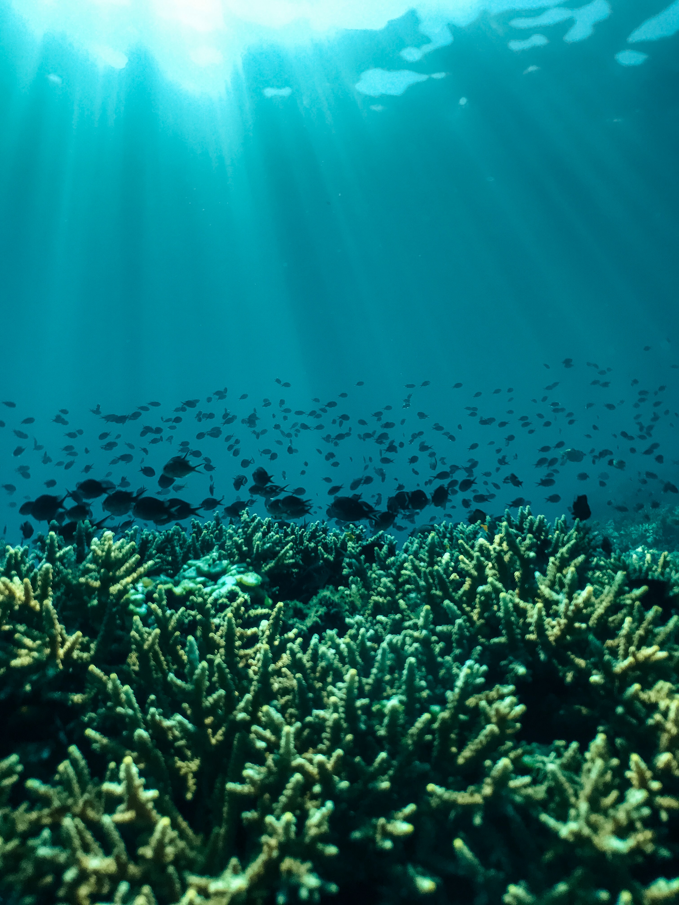
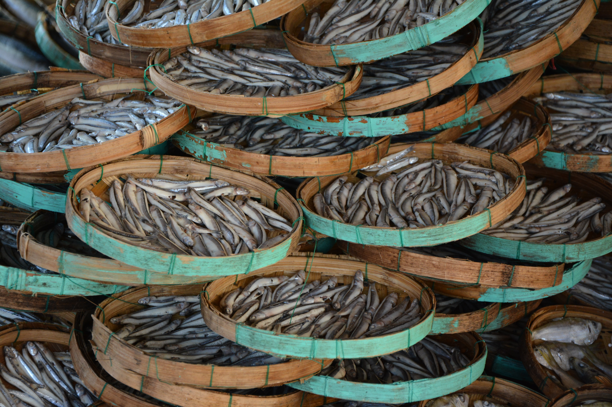

Website of Pescaderia María Jesus
Our website allows you to browse in a comfortable and simple way Fish, Shellfish and other Packaged products such as preserves and frozen. Buying the best seafood products is now within everyone's reach.
Products

Fish

Seafood

Packaged
About us
Buy fresh fish and seafood at home. Coming mostly from the coasts of the Mediterranean. Among our products, the best seafood at home stands out: prawns from Vinaròs and seafood from the Ebre Delta, such as rock mussels (famous for their flavor), tellinas, oysters, razor clams, blue crab, clams.
We also highlight Mediterranean products such as anchovies, sardines, whitebait for broth, wild sole, cuttlefish, mullet, red tuna, eel and Mediterranean fried fish.
All the products in our online store are caught through selective artisanal fishing, which respects the marine environment.






Contact Us
We are here to help you! If you have any questions or comments, please do not hesitate to contact us.
We are located in Maqueda, Málaga and our team of fish and seafood experts is ready to serve you
Contact information:
- Address: Street Tacón number 3, Maqueda, Málaga
- Phone Number: 617 85 11 03
- Email:pescaderiamariajesus@gmail.com
Attention service hours:
We are open from 9am to 3pm every day of the week.